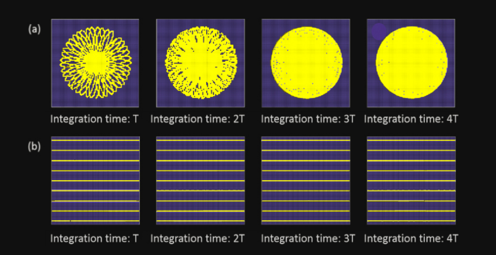

2. Livox的扫描特性简介¶
2.1. 视场覆盖率介绍¶
激光雷达视场指的是激光雷达所探测的区域，该区域内的目标物体都有可能被检测到。然而，并非视场中的所有物体都能被检测到，原因包括：
目标物体距离激光雷达过远或不在检测范围之内，导致物体反射光太弱，无法被识别。
在某段时间内，由于激光只能照亮其扫描路径上的物体并测量其距离，不处在该段时间内激光扫描路径上的物体就无法被探测到。
若能优化扫描方法，增大激光束路径所覆盖的区域在视场内的占比，即可降低上述第二种情况出现的概率。因此，视场内激光照射到的区域面积，关系到激光雷达的测量性能。该指标可以定量地用激光雷达视场中被激光探测到的区域的比例，即为视场覆盖率来表征。其计算公式如下：

下图为Lidar的扫描视场图，黄色方块表示扫描到的区域，蓝色方块表示未被扫描到的区域：

2.2. 非重复式扫描方式¶
传统激光雷达普遍采用机械扫描方式，扫描路径随时间重复。而Livox
激光雷达采用了独特的扫描⽅式，扫描路径不会重复。在非重复扫描方式中，视场中被激光照射到的区域面积会随时间增大，这意味着视场覆盖率随时间推移而显著提高，可减小视场内物体被漏检的概率，有助于探测视场中的更多细节。
下图中给出了一个直观的例子。（a）图由于采用了非重复扫描方式，随着时间的积累，视场覆盖率逐渐升高。而（b）图，由于扫描每次都是重复的，视场覆盖率几乎没有提升。
2.3. Livox激光雷达指标¶
Livox的三款激光雷达：Mid-40、Horizon以及Tele-15均采用了非重复扫描方式，具有较高的视场覆盖率，且随着积分时间变长，视场覆盖率也会显著增大，直到接近100%，即视场中几乎所有区域都会被激光束照射到，如下图所示：

该图同时显示了采用多线机械旋转重复扫描方式的激光雷达的视场覆盖率，其中包括竖直视场角为27°的64线产品、竖直视场角为41°的32线产品和竖直视场角为30°的16线产品。
可以看出，Mid-40、Horizon及Tele-15的表现十分出色，并随时间推移而达到最优：
当积分时间为0.1s时，Mid-40的视场覆盖率与32线产品相近；当积分时间为0.5s时，Mid-40的视场覆盖率与64线产品相当。当积分时间继续增大时，覆盖率继续增大，直至接近100%。
Horizon在积分时间是0.1s时，覆盖率即与传统64线激光雷达的相当。积分时间0.2s时，视场覆盖率即可达到80% 以上。
Tele的覆盖率优于市场上常见的多线旋转机械式激光雷达。当积分时间为0.1s时，视场覆盖率可达到99.8%左右。当积分时间为0.2s时，视场覆盖率接近 100%。